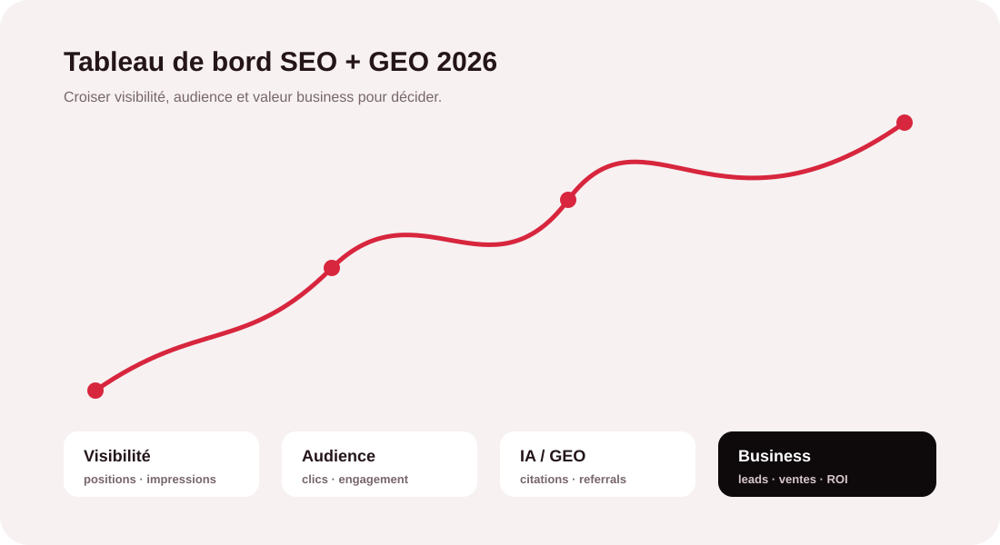
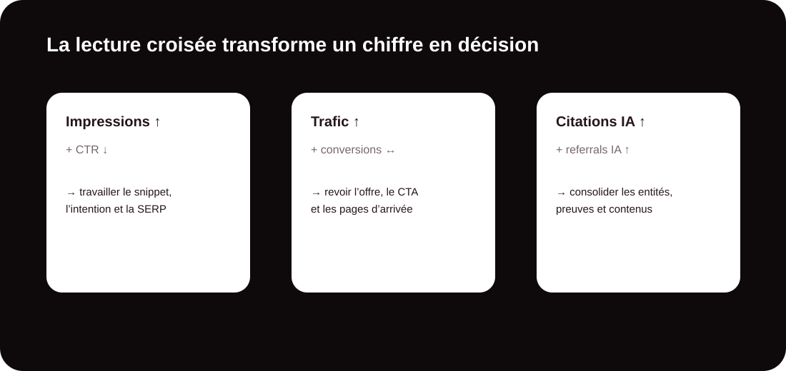

Mesurer moins, décider mieux
Un KPI SEO est un indicateur chiffré qui permet d’évaluer l’efficacité du référencement naturel. Trafic organique, positions, taux de clics ou conversions sont utiles, mais aucun ne raconte toute l’histoire. En 2026, la recherche s’étend aussi aux réponses générées par les moteurs et assistants IA : une marque peut gagner en exposition sans que cette progression apparaisse immédiatement dans son trafic Google.
La bonne méthode consiste donc à suivre un tableau de bord court, stable et orienté décision. Huit indicateurs couvrent l’essentiel, à condition d’intégrer la visibilité dans les réponses IA et les visites qu’elles génèrent.

Les 8 KPI à installer dans votre tableau de bord
Trafic et impressions : distinguer audience et exposition
Commencez par rapprocher les données de Google Analytics et de Search Console. Une hausse des impressions accompagnée de clics stables peut signifier que votre site apparaît sur davantage de recherches, mais que vos extraits ou votre position ne captent pas encore suffisamment l’attention. Ce n’est pas le même diagnostic qu’une baisse simultanée des impressions et des clics.
Positions : suivez un portefeuille de requêtes, pas un mot-clé vedette
Une position moyenne isolée est fragile. Regroupez plutôt vos requêtes stratégiques par intention : information, comparaison, service, achat, marque. Vous verrez si votre visibilité progresse là où elle a réellement de la valeur et pourrez comparer votre présence à celle des concurrents.
CTR : repérer les opportunités déjà à portée de clic
Le taux de clic organique devient particulièrement intéressant lorsqu’une page obtient beaucoup d’impressions et une position correcte. Si les clics restent faibles, examinez le title, la promesse, l’adéquation à l’intention et l’environnement de la SERP. Comparez surtout une page à son propre historique plutôt qu’à une moyenne générique.
Vos KPI montrent-ils réellement ce que votre SEO rapporte ?
MinoSeo peut auditer votre mesure actuelle, identifier les indicateurs utiles et construire un reporting lisible pour vos équipes et votre direction.
Demander un audit SEO / GEODeux métriques GEO devenues indispensables
Mesurer votre présence dans les réponses générées par l’IA
Le SEO ne s’arrête plus à une liste de liens. Sur un ensemble fixe de questions importantes pour votre marché, relevez la fréquence à laquelle votre marque, votre domaine ou vos contenus apparaissent dans les réponses de moteurs et assistants IA. Distinguez une simple citation, une recommandation explicite et l’utilisation de votre site comme source. Répétez les mesures : les réponses génératives varient et un relevé unique ne suffit pas.
Isoler les visites envoyées par les assistants IA
Dans votre outil analytics, créez un segment regroupant les sources provenant des principaux assistants et moteurs IA. Le volume peut rester inférieur à celui de Google, mais il révèle une nouvelle voie d’acquisition. Croisez ensuite ce trafic avec l’engagement et les conversions : la quantité seule ne permet pas de juger sa valeur.
Relier le référencement aux résultats commerciaux
Engagement : vérifier que la promesse est tenue
Une visite n’est utile que si la page répond au besoin. Analysez les sessions engagées, les interactions, les pages consultées et les parcours vers les CTA. Ces signaux servent à diagnostiquer l’expérience et la pertinence du contenu ; ils ne doivent pas être présentés comme des facteurs de classement directs.
Conversions et ROI : le KPI que la direction doit comprendre
Configurez précisément les événements clés : formulaire envoyé, clic téléphonique, demande de devis, prise de rendez-vous, inscription ou vente. Vous pourrez alors comparer la progression du trafic aux résultats obtenus. Le ROI se calcule à partir de la valeur créée et du coût du dispositif SEO, avec une lecture adaptée au cycle de vente et au délai nécessaire au référencement pour produire ses effets.
Autorité : privilégier qualité, pertinence et réputation
Suivez les nouveaux domaines référents, la qualité des liens, les pages qui en bénéficient et les mentions de marque. Les scores proposés par les outils tiers sont surtout utiles en comparaison avec votre marché. Pour une stratégie SEO/GEO, la réputation éditoriale et la cohérence des mentions comptent autant que le volume brut de backlinks.

Quel rythme de suivi adopter ?
| KPI | Source principale | Rythme conseillé | Question à poser |
|---|---|---|---|
| Trafic organique | GA4 + Search Console | Mensuel | L’audience qualifiée progresse-t-elle ? |
| Positions / visibilité | Search Console + tracker | Hebdo / mensuel | Gagnons-nous sur les requêtes prioritaires ? |
| CTR | Search Console | Mensuel | Nos impressions deviennent-elles des clics ? |
| Part de voix IA | Relevés / outil GEO | Mensuel | Sommes-nous cités sur les bonnes questions ? |
| Trafic IA | Analytics | Mensuel | Les assistants nous envoient-ils des prospects ? |
| Engagement | GA4 | Mensuel | Les pages répondent-elles au besoin ? |
| Conversions | GA4 + CRM | Mensuel | Quel résultat business vient du SEO ? |
| Autorité / mentions | Outils SEO + veille | Trimestriel | Notre réputation progresse-t-elle ? |
La règle la plus importante : toujours croiser les données
Un KPI qui baisse n’appelle pas automatiquement une correction. Cherchez d’abord le contexte : saisonnalité, modification technique, évolution de la SERP, concurrence, mise à jour algorithmique ou changement de mesure. Puis associez les métriques. Positions en hausse mais CTR en baisse ? Travaillez l’attractivité et l’intention. Trafic en hausse mais conversions stables ? Analysez les pages d’arrivée et l’offre. Citations IA en hausse sans trafic référent ? Vérifiez comment la marque est présentée et si les sources citées encouragent la visite.
Construire un reporting qui conduit à l’action
Un tableau de bord efficace tient idéalement sur une page de synthèse. Pour chaque KPI, conservez une valeur de référence datée, la période actuelle, l’évolution et surtout une colonne « action ». La direction peut se concentrer sur conversions, valeur et coût d’acquisition, tandis que l’équipe SEO conserve le détail par page, requête et type de visibilité.
Transformez vos données SEO en plan d’action
Avec plus de 15 ans d’expérience en SEO et GEO, MinoSeo vous accompagne de la mesure à l’optimisation : audit, contenu, technique, netlinking et suivi de visibilité dans les moteurs IA.
Parler à un expert MinoSeoLe bon KPI est celui qui déclenche une décision utile
En 2026, piloter le référencement exige une vision plus large que le trafic Google. Les huit KPI présentés couvrent visibilité classique, expérience, business, autorité et présence dans les réponses IA. Leur force ne vient pas de leur nombre, mais de leur lecture croisée et régulière.
Pour MinoSeo, le reporting n’est donc pas une fin : c’est un outil de priorisation. Il doit montrer ce qui progresse, ce qui bloque et quelle action mérite d’être engagée ensuite pour améliorer durablement votre visibilité SEO et GEO.
Besoin d’un pilotage SEO/GEO plus clair ?
Faites auditer vos KPI et obtenez des priorités directement exploitables.
Demander mon audit